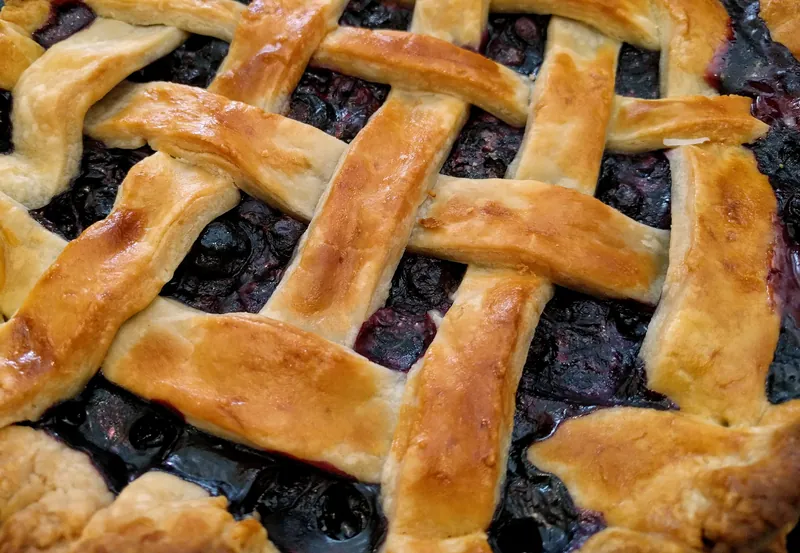
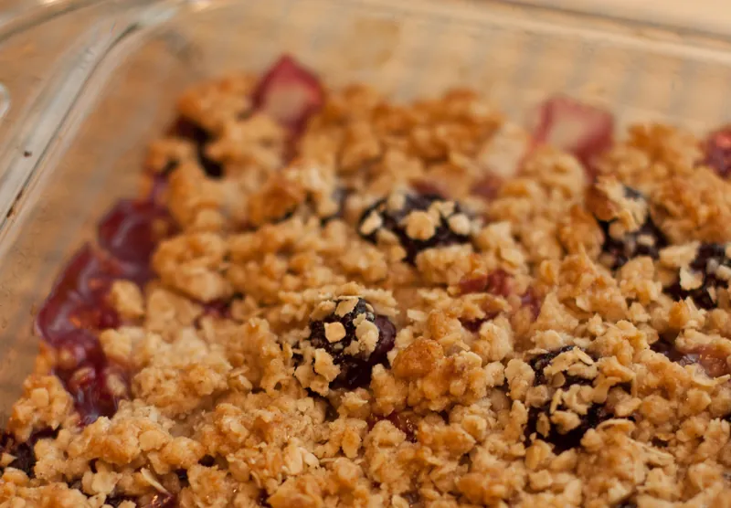
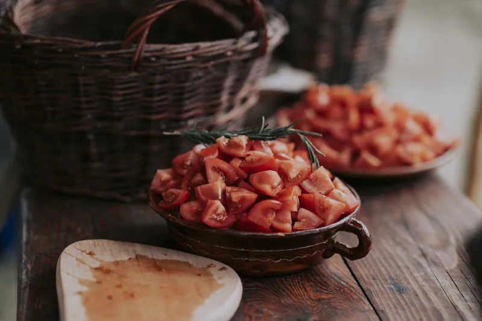
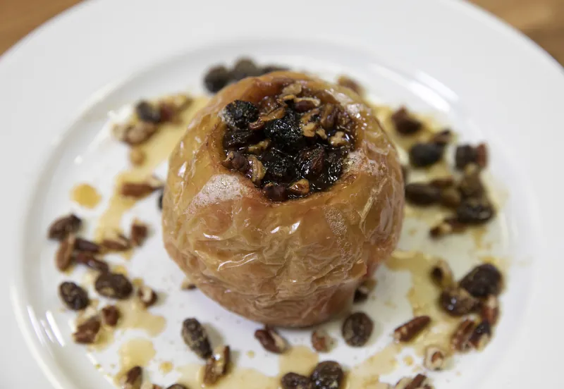
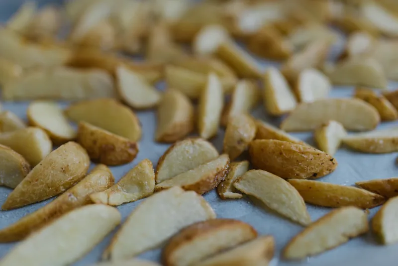

Recipes, by season
Everything we have published, grouped by the time of year the main ingredient is actually at its best. Jump to a season, or read down.
How this page is arranged
Four sections, one per season, in the order the year runs. Within a season the recipes are listed roughly in the order their main ingredient turns up, so the rhubarb sits at the top of spring and the last of the keeping apples sit at the bottom of winter.
The seasons here are the ones that apply in southeastern Pennsylvania, which is zone 6b and gets a real winter. If you are a month ahead or a month behind that, shift the whole page accordingly — the sequence holds even when the dates do not. Readers in the Gulf states will find our autumn starts about six weeks late for them, and readers in northern New England will find our spring arrives early.
Each published recipe has its own page with the full method, the timings, storage and reheating notes, substitutions, an allergen line and a nutrition estimate. Where a season lists recipes that live in the cookbook rather than on the site, that is said plainly and the link goes to the book page, not to a dead end.
On substitutions
Nearly every recipe on this site has a substitutions section, and it is not there as filler. Seasonal cooking means working with what turned up, so the useful question is rarely "what does the recipe say" but "what can I swap this for and what will change". Where a swap works straight across we say so. Where it changes the timing, the texture or the amount of liquid, we say what changes and by how much. Where a swap simply does not work — and there are a few — we say that as well, because being told no is more useful than finding out at the oven door.
A word on the quantities
Measurements are in US cups, tablespoons and teaspoons, with weights in ounces and pounds and oven temperatures in degrees Fahrenheit. Where a weight matters more than a volume — which in baking is most of the time — we give the weight first and the cup measure after it in brackets. Flour in particular is given by weight, because a cup of flour can vary by almost two ounces depending on how it got into the cup, and that is the difference between a tender crust and a tough one.
Spring
Rhubarb first, usually the second half of April, then chives and the hard herbs waking up, then asparagus, then the first lettuces. Spring cooking here is mostly about restraint: the ingredients are thin and sharp and they do not need much done to them. This is the shortest section on the site, and deliberately so.
Spring recipes are currently in the cookbook rather than on the site — eleven of them, including a rhubarb and orange compote that keeps three weeks in the refrigerator and a herb butter that solves most of April. See what is in the book.
Summer
Berries from late June, tomatoes from the middle of July, stone fruit on their heels, and by the middle of August more of everything than anyone planned for. Summer is the season of the glut, so the recipes that earn their place are the ones that use fruit by the quart rather than by the handful.
-

Summer · baking
Lattice-Top Blueberry Pie
Six cups of berries, an all-butter crust, and a filling thickened with tapioca so it sets soft rather than solid. The lattice is a twenty-minute skill, explained step by step.
-

Summer · in the book
Nine more summer recipes
Including a tomato and bread salad that improves for two hours, a blackberry cordial, and the freezer method we use to keep July berries worth baking with in February.
Autumn
The longest section, because this is the longest season in a kitchen. Apples from late August to the hard frost, winter squash from September, pears in a short intense window in October, and the last of the field tomatoes which by then are only worth cooking. If you only ever use one part of this site, use this one.
-

Autumn · soup
Butternut Squash Soup with Sage Butter
Roasting the squash before it ever meets liquid is the whole recipe. Browned butter and fried sage go on at the table.
-

Autumn · pudding
Apple Crumble with an Oat Topping
Two kinds of apple, because one collapses and one holds, and a topping with enough oats in it to stay crisp overnight.
-

Autumn · in the book
Pears, and what to do in their two good weeks
Pears are ripe for about a fortnight and then they are not. The book has five pear recipes built around that fact, including this crumble.
-

Autumn · in the book
Late tomatoes, cooked down
The ones that will not ripen properly and taste of nothing raw turn into something worth having after forty minutes in a low oven.
Winter
Roots, brassicas, keeping apples, and whatever came out of the freezer. Winter cooking is long and low: the oven is on anyway, so you may as well put something in the bottom of it. Nothing in this season needs to be quick.
The winter chapter lives in the cookbook — fourteen recipes including a braised red cabbage that is better on the second day and a baked apple with raisins and a spoonful of cream that takes four minutes to put together. See the book.
-

Winter · in the book
Baked apples with raisins
Four minutes of work, forty in the oven, and it uses the apples that have gone slightly soft in the bowl.
-

Winter · in the book
Roots on a tray
The method rather than the recipe: how to get potatoes, parsnips and carrots to finish at the same time on one sheet pan.
Recipes marked in the book are not published on this site. They are in A Thistledown Year, the 148-page digital cookbook, which costs $19.00 as a one-time purchase.